Hành trình tìm đường cứu nước
 1930
1930
Thành lập Đảng
Đảng Cộng sản Việt Nam ra đời, mở ra bước ngoặt lịch sử
Ý nghĩa của tư tưởng đó với cách mạng Việt Nam
Pháp xâm lược
Thực dân Pháp nổ súng xâm lược Việt Nam tại Đà Nẵng
Nguyễn Tất Thành ra đi
Trên tàu Amiral Latouche-Tréville, bắt đầu hành trình vĩ đại
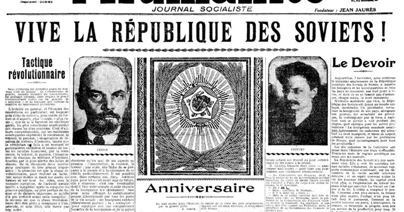
1920Tiếp cận Luận cương
Đọc Sơ thảo Luận cương của Lênin về vấn đề dân tộc và thuộc địa
1930
Thành lập Đảng
Đảng Cộng sản Việt Nam ra đời, mở ra bước ngoặt lịch sử
Từ độc lập dân tộc đến tự do và hạnh phúc của nhân dân
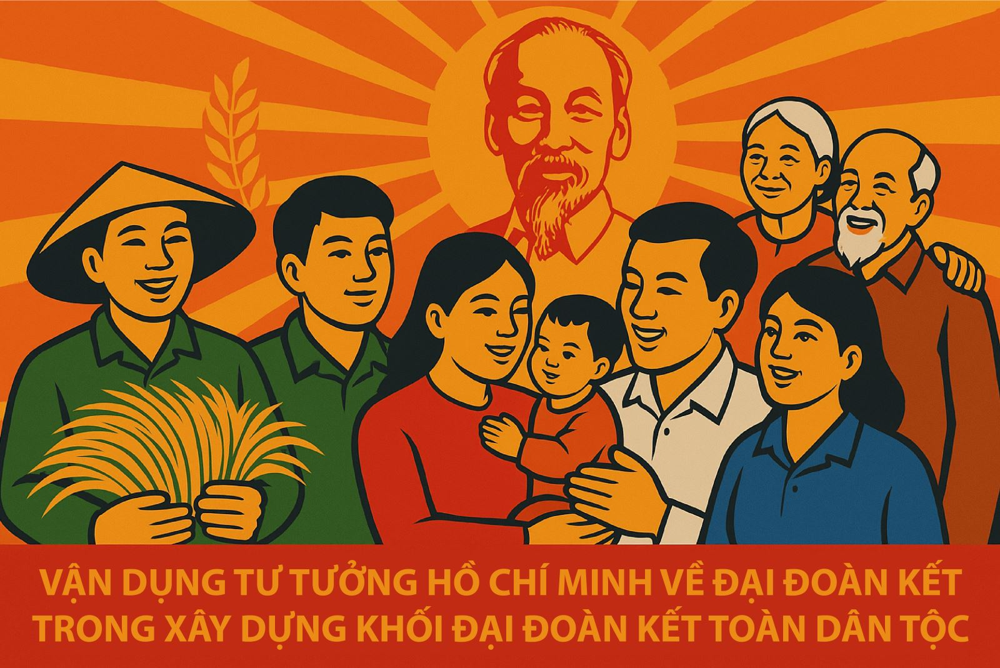
📷 Quan điểm cốt lõiGiành và giữ quyền tự quyết
Nhân dân được làm chủ
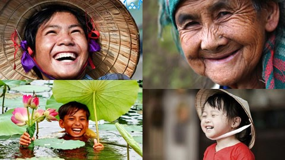
Cuộc sống ấm no, an toàn, phát triển
Ý nghĩa của độc lập được đo bằng khả năng đem lại quyền làm chủ và cuộc sống tốt đẹp cho nhân dân.
"Giành độc lập là bước đầu"
Sau khi thoát khỏi ách thống trị, đất nước phải tiếp tục xây dựng một xã hội mới.
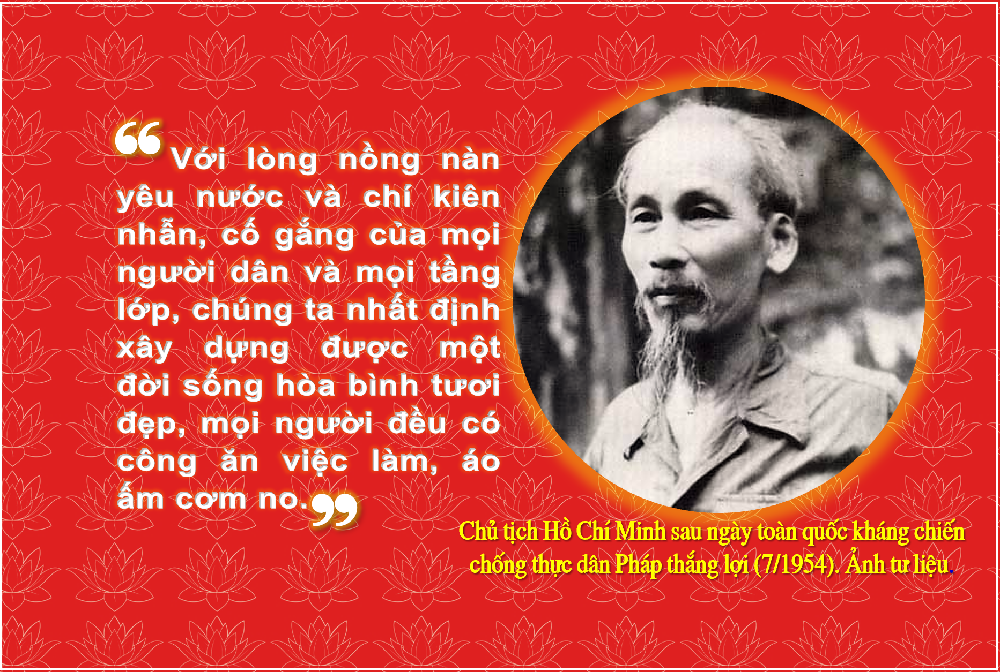
📷 Giành độc lập là bước đầu"Mục tiêu hướng tới"
Nhân dân làm chủ, có điều kiện phát triển và hưởng thành quả của đất nước.
"Tính thống nhất"
Giải phóng dân tộc gắn với giải phóng con người và xây dựng xã hội theo định hướng xã hội chủ nghĩa.
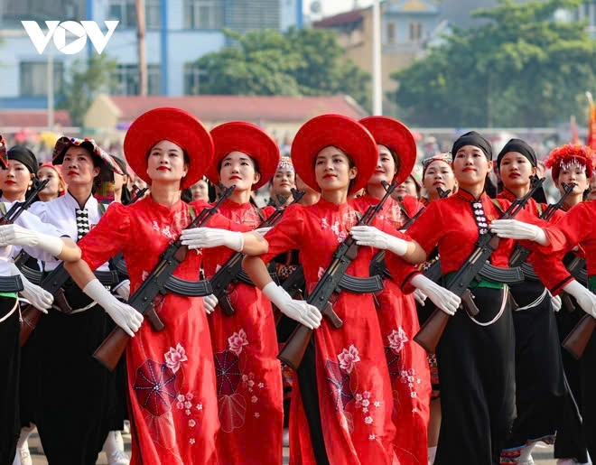
📷 Tính thống nhất"Không tách dân tộc khỏi nhân dân"
Độc lập không phải mục tiêu chỉ dành cho nhà nước, mà phải trở thành quyền sống và quyền làm chủ của nhân dân.
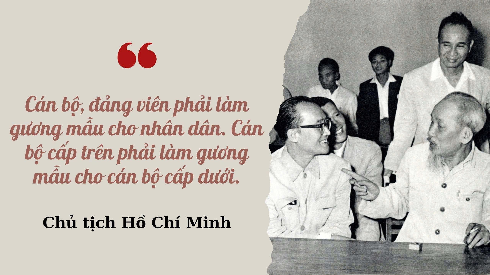
📷 Không tách dân tộc khỏi nhân dân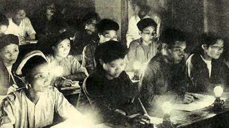
📷 Không dừng ở giành chính quyền"Không dừng ở giành chính quyền"
Sau độc lập phải xây dựng và bảo vệ thành quả cách mạng.
"Từ dân tộc đến con người"
Giải phóng dân tộc hướng tới giải phóng con người và tạo điều kiện cho con người phát triển.
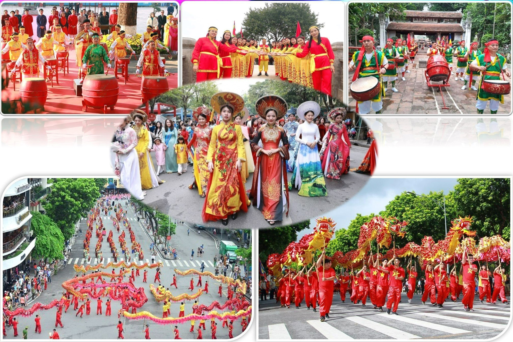
📷 Từ dân tộc đến con ngườiGiải phóng dân tộc cần con đường đúng, lực lượng rộng và tổ chức lãnh đạo phù hợp
Cách mạng vô sản, kết hợp giải phóng dân tộc với giải phóng giai cấp
Đoàn kết toàn dân, lấy công nông làm nòng cốt
Đảng Cộng sản là nhân tố quyết định thắng lợi
"Nhận thức từ thực tiễn"
Các khuynh hướng cứu nước trước đó chưa giải quyết được căn bản vấn đề độc lập.

"Bước ngoặt 1920"
Nguyễn Ái Quốc tiếp cận Luận cương của Lênin về vấn đề dân tộc và thuộc địa.
"Kết luận chiến lược"
Xác định cách mạng vô sản là con đường phù hợp để giải phóng dân tộc Việt Nam.
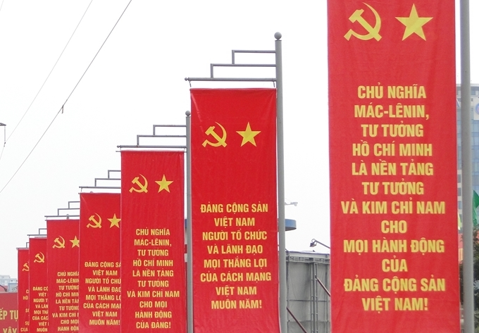
📷 Ý nghĩa"Ý nghĩa"
Đường lối cứu nước chuyển từ tìm kiếm mô hình sang xác định một hướng đi có cơ sở lý luận rõ ràng.
"Lực lượng nền tảng"
Công nhân và nông dân.
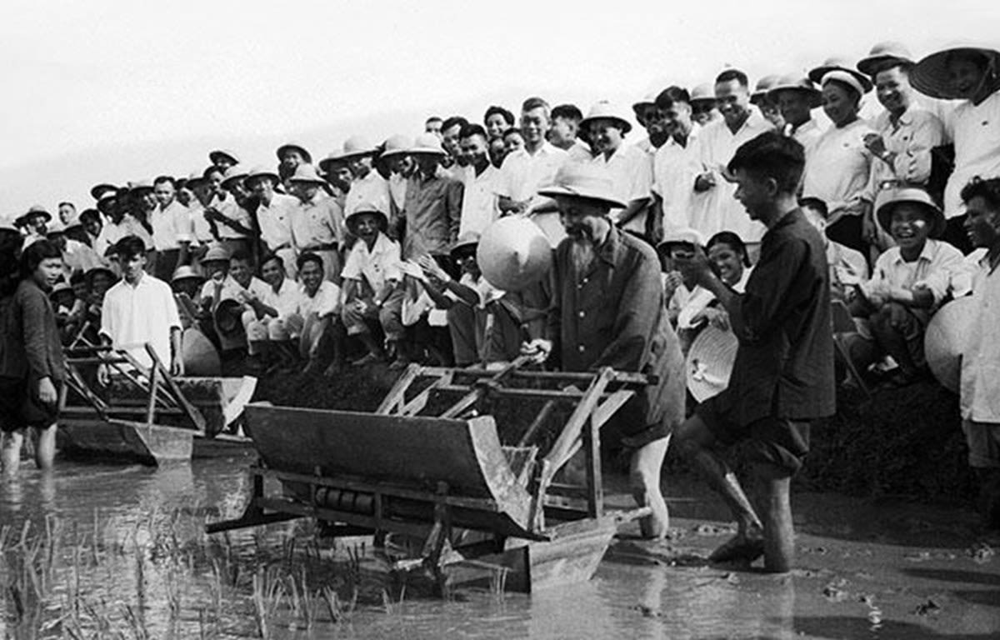
📷 Lực lượng nền tảng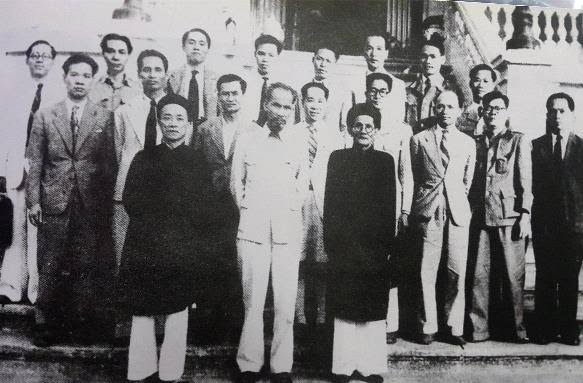
📷 Mở rộng lực lượng"Mở rộng lực lượng"
Tập hợp trí thức, tiểu tư sản và các lực lượng yêu nước khác.
"Nguyên tắc"
Không chia rẽ những người có chung mục tiêu độc lập.
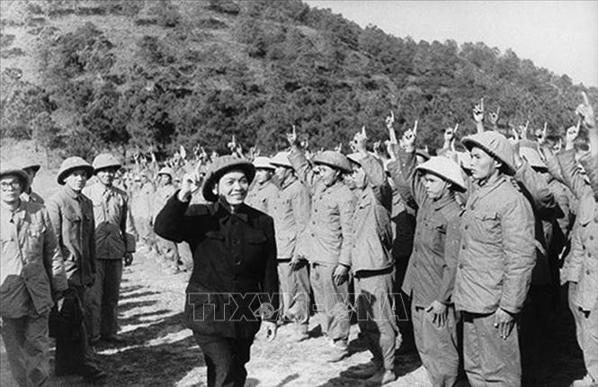
📷 Nguyên tắc"Sức mạnh then chốt"
Đại đoàn kết toàn dân tộc biến mục tiêu cách mạng thành sức mạnh xã hội rộng lớn.
ĐƯỜNG LỐI ĐÚNG + TỔ CHỨC LÃNH ĐẠO
+ NHÂN DÂN LÀ CHỦ THỂ + ĐOÀN KẾT
= SỨC MẠNH CÁCH MẠNG
Yêu cầu đối với Đảng: gắn bó với nhân dân, có đường lối phù hợp và đặt lợi ích dân tộc, nhân dân lên hàng đầu.
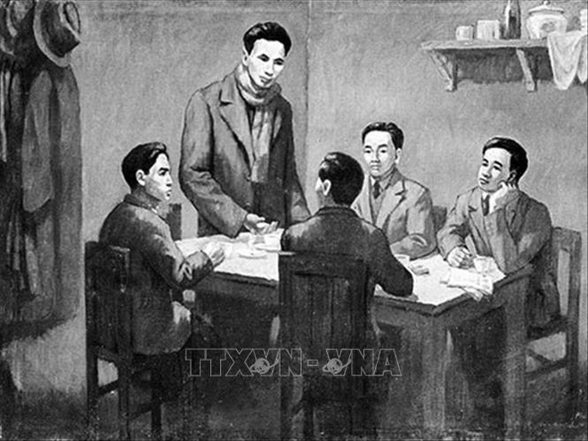
📷 Vai trò của tổ chức lãnh đạo"Tư tưởng cốt lõi"
Mọi lực lượng yêu nước đều có thể đóng góp vào sự nghiệp chung.
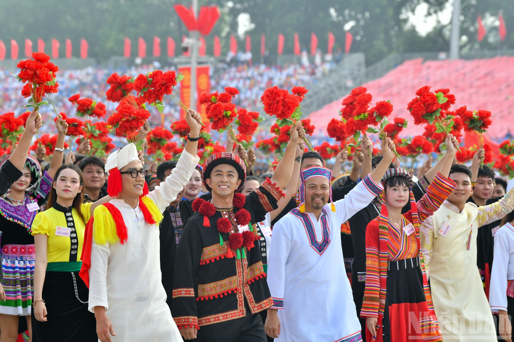
📷 Tư tưởng cốt lõi"Điều kiện thành công"
Biết tập hợp, tổ chức và phát huy lợi ích chung thay vì để khác biệt làm suy yếu lực lượng.
"Dẫn chứng lịch sử"
Khối quần chúng rộng lớn tham gia Cách mạng Tháng Tám cho thấy sức mạnh của việc huy động toàn dân.
Chủ động, tự lực, linh hoạt và kết hợp sức mạnh dân tộc với sức mạnh thời đại.
Chủ động
Tự lực
Linh hoạt
Kết hợp sức mạnh
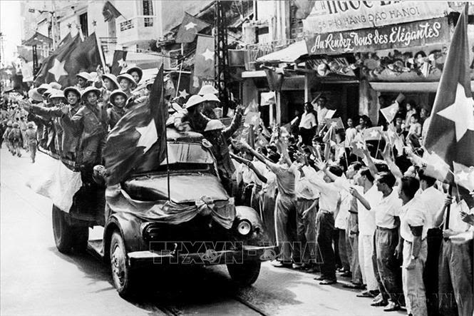
📷 Phương pháp và sức mạnh cách mạng"Chủ động"
Dân tộc thuộc địa không chỉ chờ biến động ở bên ngoài mà phải tự tổ chức và tự đứng lên đấu tranh.
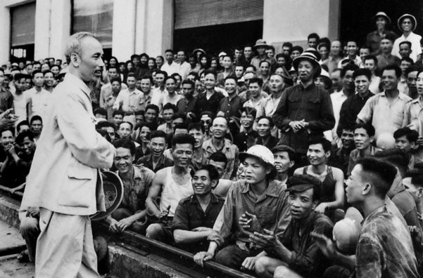
📷 Chủ động"Sáng tạo"
Lý luận phải được vận dụng phù hợp với hoàn cảnh cụ thể của Việt Nam.
"Tính thực tiễn"
Đánh giá đúng tương quan lực lượng và thời cơ để lựa chọn cách làm phù hợp từng giai đoạn.
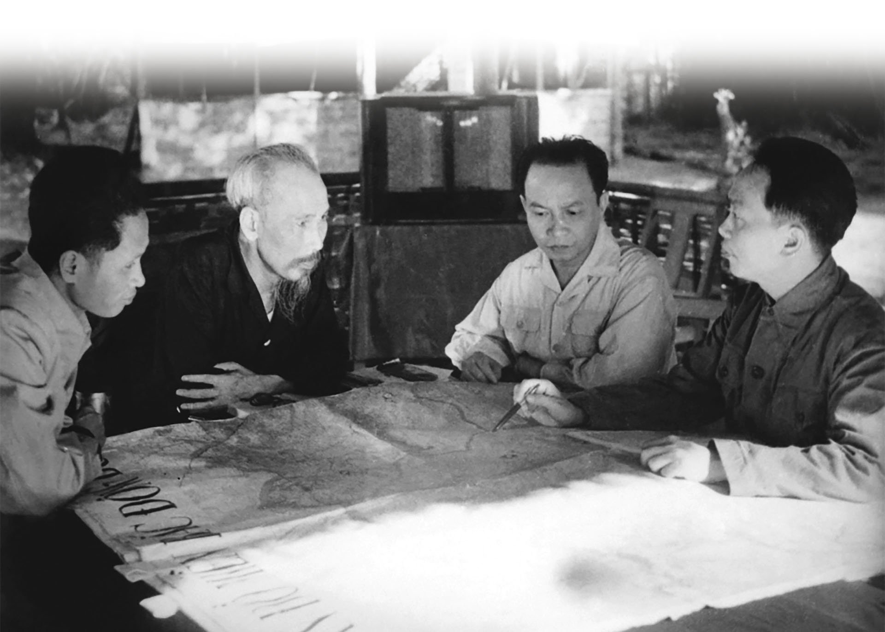
📷 Tính thực tiễn"Nội lực là quyết định"
Phải dựa vào nhân dân, tinh thần tự chủ và khả năng tự tổ chức của dân tộc.
"Ngoại lực là quan trọng"
Tranh thủ sự đồng tình, ủng hộ và hợp tác của các lực lượng tiến bộ trên thế giới.
"Nguyên tắc cân bằng"
Không lệ thuộc bên ngoài nhưng cũng không tự cô lập.
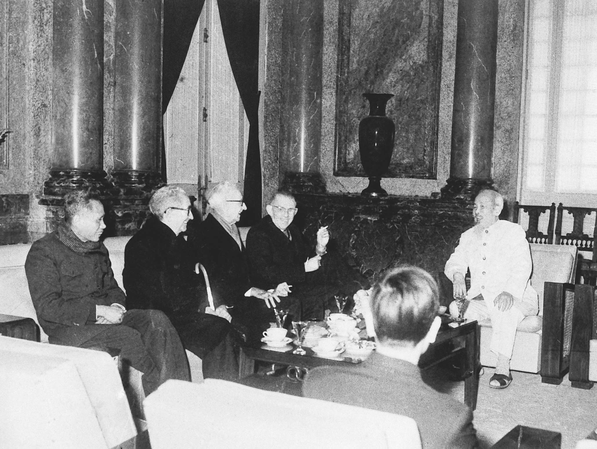
📷 Nguyên tắc cân bằng"Phát huy quần chúng"
Lấy sức mạnh của nhân dân làm nền tảng.
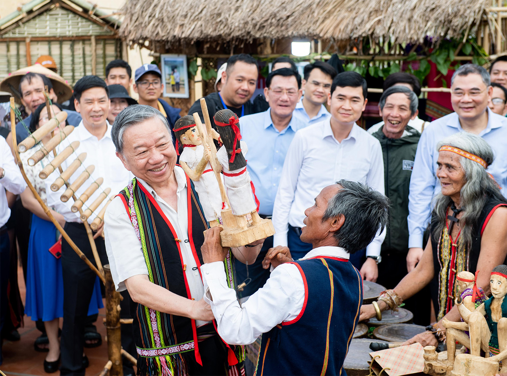
📷 Phát huy quần chúng"Kết hợp nhiều hình thức"
Đấu tranh chính trị, vận động quần chúng và các hình thức phù hợp với hoàn cảnh.
"Kết hợp chính trị và vũ trang"
Sử dụng phù hợp với yêu cầu và điều kiện lịch sử.
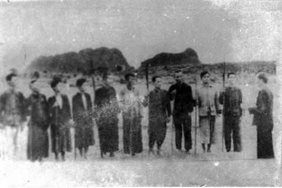
📷 Kết hợp chính trị và vũ trang"Nắm bắt thời cơ"
Khi điều kiện chín muồi phải hành động nhanh, quyết đoán và tổ chức tốt.
Dùng các mốc lịch sử để chứng minh cách tư tưởng được vận dụng trong thực tiễn.
Cách mạng Tháng Tám
Chiến thắng Điện Biên Phủ
Đại thắng mùa Xuân
Công cuộc Đổi mới
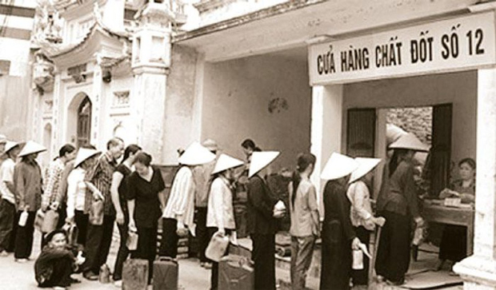
📷 Công cuộc Đổi mới 1986Giá trị giai đoạn hiện nay
Liên hệ với sinh viên
"Ánh sáng soi đường cho Dân tộc" | VTV24
📌 Nội dung video: Tư tưởng Hồ Chí Minh – ánh sáng soi đường cho cách mạng Việt Nam, từ độc lập dân tộc đến xây dựng và bảo vệ Tổ quốc.
Chân thành cảm ơn
thầy cô và các bạn!